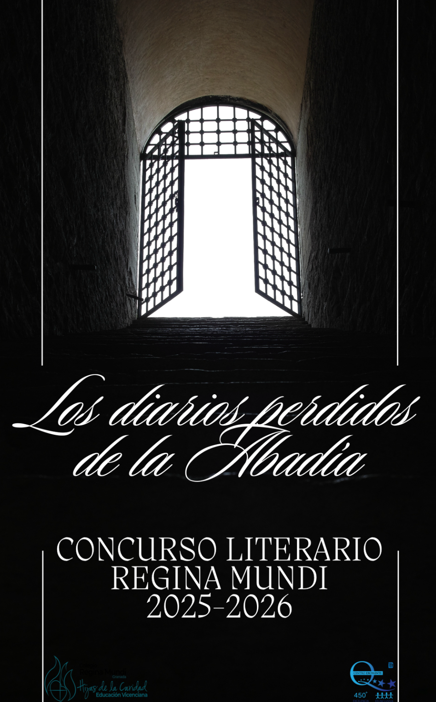

Propuesta de Innovación Educativa: Arte Sacro Granadino — Curso 2025-2026

Diseño de una ruta de 3,8 km con un desnivel de 152 metros para explorar el entorno natural de la Abadía del Sacromonte, integrando la actividad física con el conocimiento del patrimonio.

Estudio de la biodiversidad de avifauna en la Abadía del Sacromonte mediante el reconocimiento auditivo del canto de las aves, utilizando la aplicación Merlin Bird ID.


Investigación de 15 elementos químicos presentes en distintos lugares de la Abadía del Sacromonte: el Cristo de los Gitanos, las cuevas, los Libros Plúmbeos y otros elementos arquitectónicos y artísticos.

Proyecto "Buscar, medir y calcular". El alumnado aplica conceptos matemáticos al estudio de la Abadía: mediciones, cálculos geométricos y resolución de problemas basados en elementos arquitectónicos reales del monumento.
Creación de juegos y mapas interactivos con los contenidos trabajados por otros departamentos, así como el desarrollo de esta web del proyecto.

Realización de perspectivas cónicas de vistas de la Abadía del Sacromonte, aplicando técnicas de representación arquitectónica. Los trabajos se expondrán en el centro.


Descubrimiento del sentido y valor de las peregrinaciones: su historia, sus raíces y su significado como manifestación popular de fe. Investigación de la peregrinación a la Abadía del Sacromonte, una tradición granadina que une devoción, cultura e historia.
Narración en primera persona con forma de diario, con entradas fechadas. Hojas manuscritas y envejecidas, tamaño cuartilla, grapadas o cosidas.
Entre 300 y 600 palabras.
27 de marzo de 2026
Ganadores anunciados el 23 de abril de 2026. Premios patrocinados por la AMPA del colegio.



Dibujo científico de las aves endémicas del Sacromonte. En colaboración con el departamento de Biología, el alumnado representa gráficamente las especies identificadas durante las salidas de campo.


"El secreto de los tapices". Estudio de los tapices de la Abadía, con presentación, dibujo en claroscuro de fragmentos y relieve coloreado. Los trabajos se expondrán colaborando con el proyecto solidario de la Cruz de Mayo del colegio.
Aproximación al estudio de los clásicos latinos a través del catálogo de la biblioteca histórica de la Abadía del Sacromonte (siglo XVII). El alumnado investiga cómo se estudiaban y transmitían estos textos en el contexto del seminario y colegio de la Abadía.

"Espías, armas y secretos: España y la independencia de EEUU"
La Abadía del Sacromonte se convierte en el punto de partida de este trabajo. El alumnado descubre cómo, desde este lugar granadino y a través de figuras como Francisco de Saavedra, los Gálvez y los reyes Carlos III y Carlos IV, España desempeñó un papel clave en la independencia americana.
El proyecto culmina con la creación de avatares generados con IA, donde cada personaje histórico narra en primera persona su papel en la independencia de los Estados Unidos.
Estudio de Francisco de Saavedra, personaje pintado por Goya, y los responsables de la restauración de su retrato. Elaboración de un cuaderno de actividades para comprender la importancia de la participación directa de España en la independencia de los Estados Unidos a través de este personaje clave.
Colaboración con el Departamento de Lengua Extranjera para la traducción de los textos.

Estudio de la independencia de los Estados Unidos y la Abadía del Sacromonte desde la perspectiva anglófona:
Colaboración con el Departamento de Historia para la traducción de textos y materiales del proyecto.

Análisis del impacto multidimensional de la Abadía en la identidad local de Granada y Andalucía, su relevancia en la economía a través del turismo cultural y la generación de empleo indirecto.
Capacitar al alumnado para conocer, valorar y compartir activamente el patrimonio cultural de la Abadía del Sacromonte, consolidando su rol como ciudadanos comprometidos y promotores de su herencia cultural.

Propuesta de realización de un concierto en la Abadía del Sacromonte con la participación de padres, profesores y alumnos, siguiendo el modelo de actividades similares que ya se han llevado a cabo con éxito.

Este proyecto busca acercar al alumnado al patrimonio de Granada desde una mirada joven y participativa, fomentando su valoración y conexión con la identidad local.
Con la exposición se pretende sensibilizar a la comunidad educativa y a la ciudad de Granada sobre la falta de reconocimiento del patrimonio y promover una actitud más consciente hacia su conservación, sirviendo además como ejemplo para otras instituciones.
Se organizará un evento de inauguración abierto a la comunidad, donde los estudiantes presentarán sus trabajos y actuarán como guías de su propio legado cultural.

Los alumnos se convierten en "embajadores culturales" y "guardianes" comprometidos con la preservación del patrimonio de la Iglesia Granadina. El plan contempla dar continuidad a esta iniciativa en años sucesivos, extendiéndola a otros monumentos de la ciudad.
Se considera imprescindible seguir fomentando la participación de las familias y de toda la comunidad educativa en la valoración y difusión del patrimonio histórico-artístico de Granada.